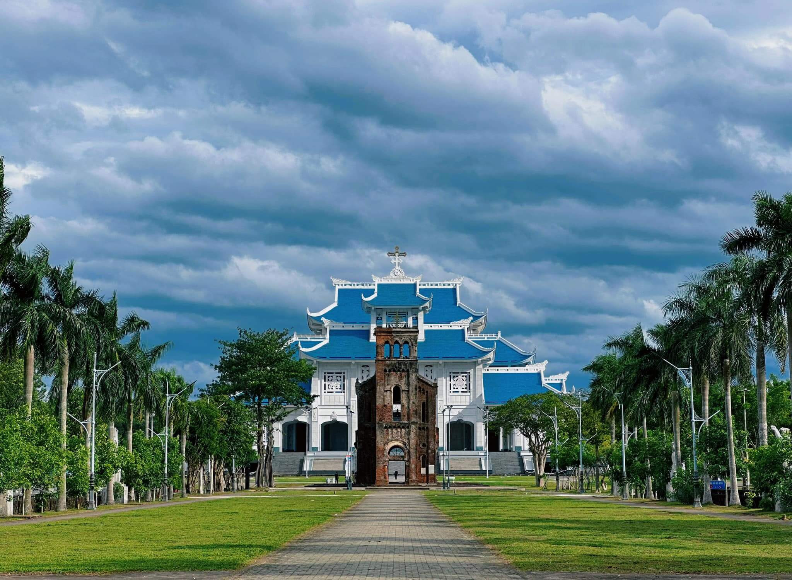

1
The Apparition Shrine
The site that preserves the memory of Our Lady's apparition. Its design evokes three great banyan trees sheltering the statue of Our Lady of La Vang, robed in the áo dài, crowned, and holding the Child Jesus.

The National Marian Shrine of the Catholic Church in Vietnam — where faith, history and distinctive architecture come together on the sacred soil of Quảng Trị.
Set in Hải Lăng Commune, Quảng Trị Province, the La Vang Holy Land is the foremost spiritual destination for Vietnamese Catholics. It also warmly welcomes visitors from everywhere — regardless of faith — who come seeking peace, stillness and healing.
First account — From the words “la vang” (to cry out): long ago this was a remote, perilous forest full of wild beasts, where travelers had to call out loudly to warn one another.
Second account — From “lá vằng” — a medicinal forest leaf which, according to oral tradition, Our Lady showed the faithful to gather and brew as a remedy — later softened in speech to “La Vang”.

More than two centuries ago, amid persecution, the faithful fled to the forest of La Vang — and there a story of faith was born.
Under King Cảnh Thịnh of the Tây Sơn dynasty, the Catholic faith was severely persecuted. A group of the faithful fled deep into the La Vang forest to take refuge. Enduring hunger, sickness and the danger of wild beasts, they gathered beneath an ancient banyan tree to pray fervently.
According to tradition, the Blessed Virgin Mary appeared in the traditional Vietnamese áo dài, holding the Child Jesus, with two angels bearing lamps at her sides. She consoled them, promised the grace of peace, and showed them a forest leaf to brew as a remedy for their illnesses.
The Catholic Bishops' Conference of Vietnam proclaimed La Vang the National Marian Shrine. That same year, Pope John XXIII raised the La Vang church to the rank of minor basilica, marking the special place of this Holy Land in the heart of the Church.


Each landmark at La Vang stands as a witness to faith, history and the spirit of Vietnamese culture.
The site that preserves the memory of Our Lady's apparition. Its design evokes three great banyan trees sheltering the statue of Our Lady of La Vang, robed in the áo dài, crowned, and holding the Child Jesus.

The surviving remnant of the old basilica (completed in 1928), heavily destroyed during the events of the summer of 1972. Weathered and moss-clad, the tower stands as a witness to history and the trials of war.

A grand structure nearing completion, deeply Vietnamese in spirit with sweeping tiled roofs in the form of traditional communal houses. With a capacity of about 5,000, its foundation stone was laid in 2012.
A vast esplanade with statues depicting the 15 Mysteries of the Rosary (Joyful, Sorrowful, Glorious) — the setting for solemn Masses and the great Pilgrimage Congresses.

A path for meditating on the Passion of Christ station by station, inviting pilgrims to walk in prayer and contemplation amid the quiet of the Holy Land.
All year round, La Vang opens wide its doors to pilgrims from everywhere — from the daily Mass to the most solemn Congresses.
Held once every three years (usually in mid-August, around the Solemnity of the Assumption), gathering hundreds of thousands of the faithful from within Vietnam and abroad.
Celebrated each year on 15 August — the Solemnity of the Assumption of the Blessed Virgin Mary — in the years without a Congress.
Holy Mass is celebrated every day. The peaceful setting is ideal for those seeking a quiet place for personal prayer and reflection.